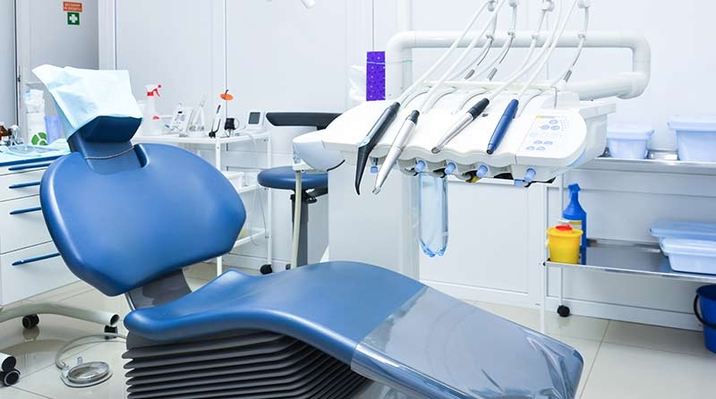
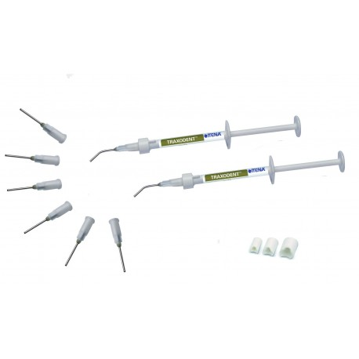
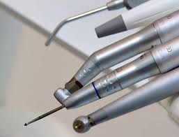
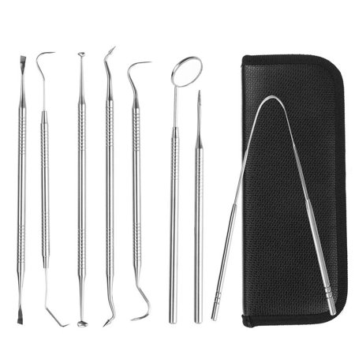
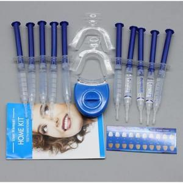

FAUTEUIL ET INSTRUMENTS

Pour le patient,c'est la que se deroule la consultation.
trois parametres peuvent etre regles par le dentiste
selon la morphologie du patient et de la zone de la bouche
a la quelle il souhaite acceder: la hauteur du siege
son inclinaisonet la hauteur de la tetiere, la partieoul'on
repose sa tete
KIT TRANSTRT-2/2 SERINGUES

C"est un traxodent qui a ete specialementformule pour procurer
une retractiongingivalechimio-mecaniqueet une bonne hemostage son
usage est indique avant la prise d'empreinte, le scellement,la preparationde
cavites dentaire ou chaque foisqu'une hemostase ou uneretractionsont necessaires.
LIME ENDODONTIQUES

lame meulee a section carree en forme de pyramide,puis vrillee avec un pas serree.Utilisee en va et vient.Longueur 21,25,28 et 31mm numero ISO 06-140,15/40,45/80 et 90/140 Embellage 6
kit special

9pieces dents en acier inoxydable à l'hygiene dentaire kit outil sonde epiler caracteristiques couleur:argent en acier inoxydable.s'occuper de dents et gencives les outils dentaires pour eliminer la peste,calculus se debarrasser des residus dentaires
kit blanchissement

Nouveau materiel dentaire blanchiment des dents LED
10x3 ml de gel de blanchiment(0,1%de peroxyde de carbamide), 2 plateaux buccaux, 1xMini lampe LED pour bouche
.PNG)